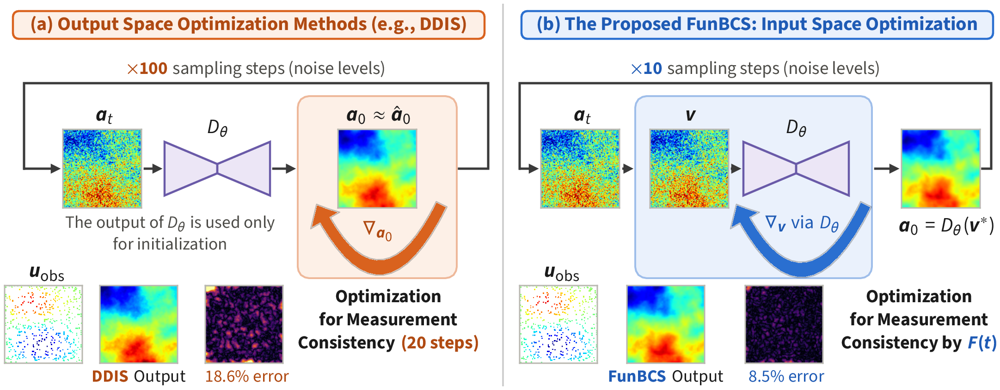
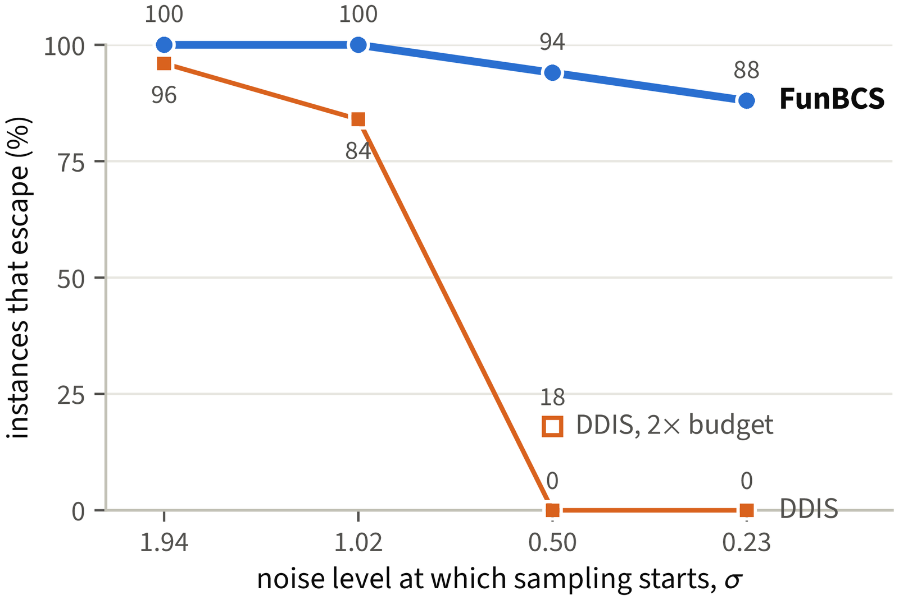
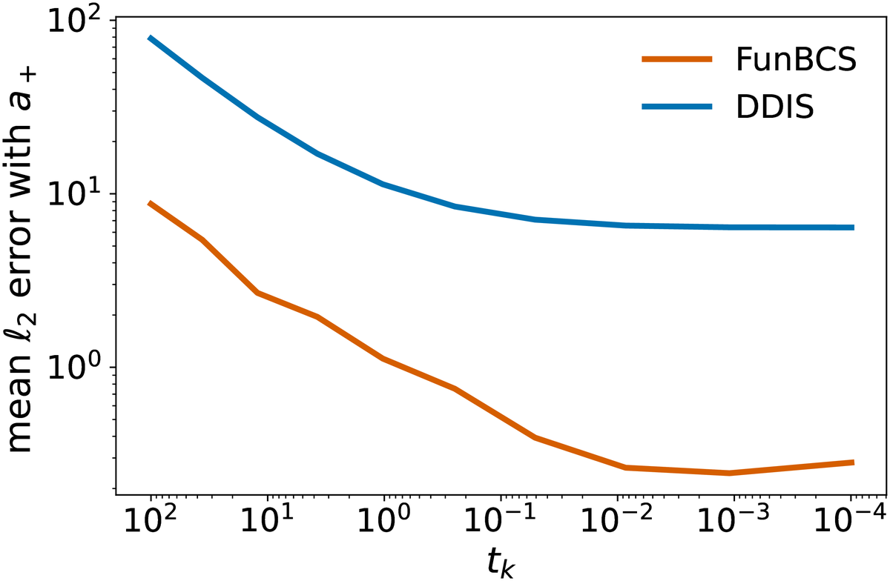
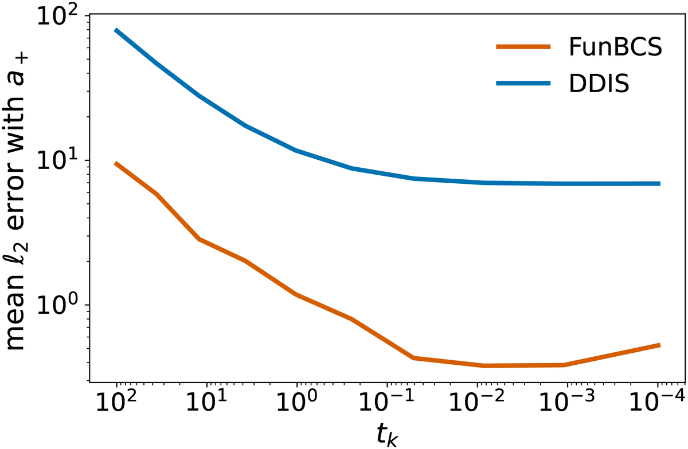
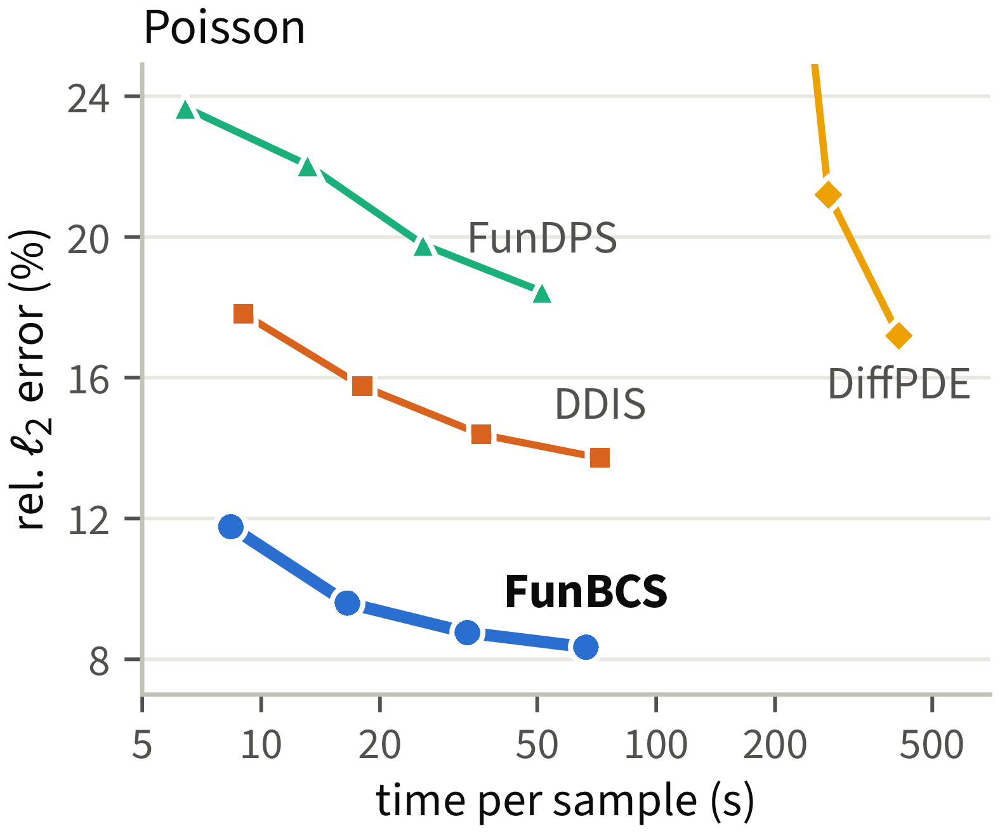

Darcy flow recovered from 3% sparse observations of the solution field: DDIS misplaces the discontinuities, whereas FunBCS recovers their locations and shapes.
Recovering Partial Differential Equation (PDE) coefficient fields from extremely sparse observations is a severely ill-posed inverse problem for which generative machine learning methods (e.g., diffusion models) have become a leading way to encode the prior. Recent state-of-the-art diffusion solvers lift these priors to function spaces, finding a physics-consistent reconstruction in the output space of the diffusion denoiser. We prove that, in a discontinuous PDE setting, output space methods can result in failure to appropriately minimize the unobserved error with the correct coefficient field. Consequently, we propose Function space Backward-Consistent Sampling (FunBCS), an input space optimization approach for solving PDE problems which aims to find the best input such that the denoiser reconstruction is physics-consistent. We then prove that FunBCS appropriately minimizes the unobserved error, unlike output space optimization methods. Per our theoretical analysis, we also provide insights on how to dynamically allocate the number of input space optimization steps used throughout the sampling process. Our evaluations, across four PDE inverse problems (including the discontinuous Darcy flow), demonstrate that FunBCS reduces the reconstruction error by 27–64% while running 1.4–2.1× faster when compared to the current state-of-the-art.
Output space methods first denoise and then fit the observations, so the fit may leave the unobserved part of the reconstruction unchanged from the denoiser prediction, and errors invisible to the forward operator persist. This is particularly pronounced for discontinuous coefficients, whose prior has distinct modes for different discontinuity locations. FunBCS instead optimizes the denoiser's input, which changes both the observed and the unobserved components of the reconstruction.

(a) Output space optimization methods such as DDIS enforce measurement consistency on a reconstruction near the denoiser's (Dθ) output, requiring 20 optimization steps at each of their 100 noise levels. (b) FunBCS jointly incorporates measurement consistency and denoising by iteratively computing the denoiser output, so the reconstruction a0 = Dθ(v*) is exactly an output of the denoiser. It requires only 10 noise levels, and the number of input space optimization steps at each of them, F(t), is dynamically allocated by our scheduler.
We evaluate on four PDE inverse problems at a resolution of 128×128: Darcy flow, Poisson, Helmholtz and Navier–Stokes, each observed at 500 randomly placed points of the solution field (3% of the grid) without noise. Each video below shows the reconstruction of one test sample by every method: the upper block shows the coefficient field and the lower block the solution field estimated from the same sparse observations, each with its absolute error to the ground truth underneath and its error on that sample. Every method is run with its published default test-time compute budget, and FunBCS in accuracy mode. FunBCS and DDIS obtain the solution field by applying the neural operator to their recovered coefficient field, whereas FunDPS and DiffusionPDE sample both fields jointly. On Darcy, the error of the coefficient field is the pixel error rate.
FunBCS attains the lowest reconstruction error on every task. In efficiency mode it is also the fastest method in our comparison, running 1.4–2.1× faster than DDIS, the current state-of-the-art diffusion-based PDE solver, with 27–64% lower reconstruction error.
| Method | Poisson | Helmholtz | Navier–Stokes | Darcy | s/sample | ||||
|---|---|---|---|---|---|---|---|---|---|
| rel. ℓ2 (%) | Es | rel. ℓ2 (%) | Es | rel. ℓ2 (%) | Es | err. rate (%) | Es | ||
| DiffusionPDE | 21.20±6.86 | 0.150±0.119 | 18.93±5.04 | 0.133±0.084 | 9.49±1.65 | 0.230±0.025 | 7.49±4.60 | 0.311±0.169 | 274.5 |
| FunDPS | 22.05±7.11 | 0.169±0.116 | 16.25±4.09 | 0.156±0.077 | 8.18±1.53 | 0.381±0.032 | 5.04±2.71 | 0.152±0.060 | 14.5 |
| DDIS | 15.76±5.08 | 0.071±0.053 | 15.47±4.34 | 0.070±0.051 | 8.36±1.55 | 0.158±0.017 | 7.48±3.89 | 0.165±0.089 | 18.0 |
| FunBCS (uniform) | 10.51±3.38 | 0.050±0.038 | 9.90±2.71 | 0.056±0.034 | 6.23±1.13 | 0.300±0.069 | 2.82±1.56 | 0.113±0.053 | 16.5 |
| FunBCS-EF | 10.22±3.33 | 0.056±0.049 | 10.04±2.95 | 0.085±0.053 | 6.14±1.11 | 0.280±0.059 | 2.69±1.50 | 0.086±0.041 | 10.4 |
| FunBCS-AC | 9.60±3.08 | 0.047±0.039 | 9.06±2.51 | 0.069±0.037 | 5.89±1.04 | 0.288±0.051 | 2.32±1.27 | 0.080±0.033 | 16.5 |
Recovery of physical coefficient fields with relative ℓ2 error and spectral energy error Es on 100 test instances from 3% observations. s/sample is seconds per sample on one NVIDIA A100. FunBCS-AC and FunBCS-EF denote FunBCS in accuracy mode and in efficiency mode; FunBCS (uniform) is FunBCS without the scheduling function (80 input space optimization steps at every noise level, 800 in total). Errors are mean ± standard deviation over the test instances; lower is better. Best in bold, second best underlined.
Relative to DDIS, the error falls by 39% on Poisson, 41% on Helmholtz, 30% on Navier–Stokes, and 69% on Darcy. The largest gain is on Darcy flow, whose piecewise-constant coefficient makes the prior sharply multimodal: the error rate drops from 7.48% to 2.32%, a 3.2× reduction.
Our analysis shows that output space methods such as DDIS can fail when the denoiser selects the wrong mode, while FunBCS can correct it. We test this on Darcy flow, where several possible discontinuity locations result in a multimodal learned prior: on 50 test instances, we move every discontinuity location of the true field a+ by five pixels to obtain a wrong field a− (11% pixel error), and start both samplers from a− renoised to a noise level σ. When started at σ = 0.5, FunBCS escapes a− on 94% of the instances, whereas DDIS escapes on none; doubling the inference budget of DDIS only increases this to 18%. If the denoiser is wrong, DDIS can fail, and this is exacerbated towards the end of the sampling process, whereas FunBCS can adjust the denoiser's decision.

Share of the 50 Darcy test instances on which each sampler escapes the wrong field a−, against the noise level σ at which sampling starts from renoised a−. An instance escapes when its final reconstruction assigns most of the pixels where a+ and a− differ to the true field a+, with a lower error rate than a−. The hollow marker is DDIS with twice its inference budget.
We also validate the theory on a discontinuous Poisson problem, where the denoiser can pick the wrong discontinuity location. FunBCS obtains significantly less error to the correct field a+ than DDIS, both in the nullspace of the forward operator, which the observations cannot see, and overall.

(a) Nullspace error to a+.

(b) Cumulative mean error to a+.
In the nullspace (a) and overall (b), FunBCS (orange) has significantly less error than DDIS (blue) on the discontinuous Poisson problem, validating our theoretical results.

At every time budget, FunBCS is more accurate than baselines. For example, FunBCS at 8 seconds per sample achieves 11.8% relative ℓ2 error on Poisson, whereas DDIS, at best, obtains 13.7% error while running for 72 seconds.
Poisson reconstruction error with respect to the time per sample. All methods are run using the same hardware. FunBCS and DDIS use the same diffusion prior.
@misc{pan2026funbcs,
title = {Backward-Consistent Diffusion Sampling for Sparsely Observed PDE Inverse Problems},
author = {Pan, Yida and Ashiq, Muhammad H. and Jung, Chanyong and Jia, Yixuan and
Miller, Jonah M. and Alkhouri, Ismail R. and Qu, Qing},
year = {2026}
}